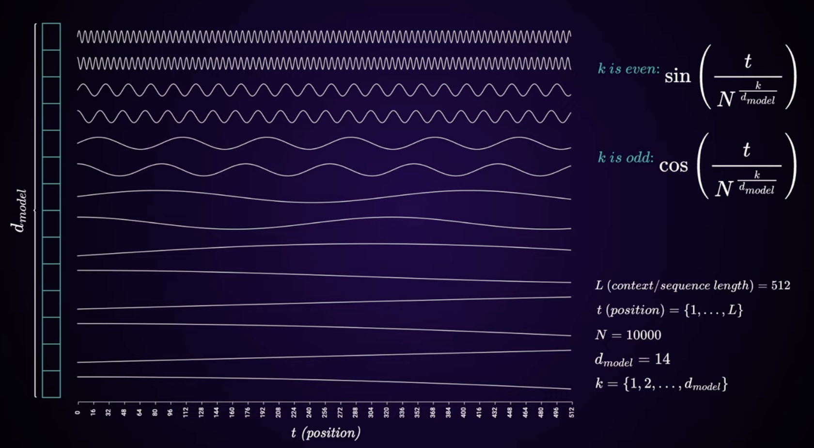

Seems like it's worthwhile just to figure out how to write a transformer from scratch. This is the thing that's exciting and interesting, and I don't give a fuck about signaling anymore. I will not allow my lack of knowledge to be a burden. The thing that I care about is being able to actually do things and talk about things and make things that work.
This isn't really a proper explainer, because I leave out most of the intuitions that I already have, say about what embeddings are and what they represent, and also just generally what certain components of the model actually do. This is an explainer that gets me from where I started to where I ended, and might not properly explain things at all. It's a third of the way from a notebook to a blog post, or something like that.
the code for this repo is ==here== (haven't added link yet)
The transformer is the most interesting thing to me right now, so here's the goal. I'm going from high level to low level (using Claude for questions and debug), explaining the intuitions in this blog post as I go. I will build basic familiarity by doing the most basic task.
First we need to define the architecture as a whole. Paradigmatically, we build a class, a data structure, then we instantiate it to train it. I think the easiest thing to start with is the forward pass; for now it'll be essentially pseudocode. Since we want the transformer to be a self-contained data structure, we can initialize most functions in the DecoderOnlyTransformer's __init__ class, hence the functions mostly being self.something() instead of something(). We'll do that in a second. First we'll build the basic forward-pass stuff.
class DecoderOnlyTransformer():
def forward(self, x):
x = self.embed(x)
x = self.positional_encoding(x)
for layer in self.layers:
x = layer(x)
output = self.out_mlp(x)
return output
Okay, great. There's our forward pass. We run it through an embed layer, add the positional embeddings, put it through $n$ transformer layers, then run it through an out MLP layer. Now let's design the __init__ part.
At this point we need to start specifying hyperparameters. We need the following:
vocab_size: how many distinct embeddings our model can work with. We'll pass this into our embedding function.d_model is the dimensionality of the embeddings, and hence the dimensionality of the model. GPT-2-medium (2019) used embeddings of size 1280; LLaMA-65B (2023) uses embeddings of size 8192. This is the number of dimensions in the embedding-space, sometimes referred to the number of "features" per embedding, but I find this terminology confusing (since these 'features' are dense and polysemantic, and mostly uninterpretable)num_heads: the number of attention heads we'll have per layernum_layers: the number of transformer layers we'll have in the model as a wholemax_seq_length: the maximum number of tokens our model can handle as an input. (longer sequences will just get truncated)d_ff is the dimensionality of the hidden dimension in the feed-forward (also known as MLP, since they're just traditional multilayer perceptrons) networks we use.We're gonna use PyTorch's nn module for this. We can implement everything relatively intuitively right now except for one which I want to explain.
class DecoderOnlyTransformer(nn.Module):
def __init__(self, vocab_size, d_model, num_heads, num_layers, d_ff, max_seq_length):
super(DecoderOnlyTransformer, self).__init__()
self.d_model = d_model
self.embedding = nn.Embedding(vocab_size, d_model)
self.positional_encoding = PositionalEncoding(d_model, max_seq_length)
self.layers = nn.ModuleList([DecoderLayer(d_model, num_heads, d_ff) for _ in range(num_layers)])
self.out_mlp = nn.Linear(d_model, vocab_size)
def forward(self, x):
x = self.embed(x)
x = self.positional_encoding(x)
for layer in self.layers:
x = layer(x)
output = self.out_mlp(x)
return output
The line which I'll explain is the super(DecoderOnlyTransformer, self).__init__(). We need this because we're importing the nn.Module parent class, and we need to initialize the methods that come with it.
Okay! That's the whole top-level architecture. Now we just need to define the components we used — PositionalEncoding, PositionalEncoding, MultiHeadAttention, and PositionwiseFeedForward.
Now for DecoderLayer. We want it to have self-attention, normalization, feedforward, normalization — this is the classic shape of a transformer block. We define the init pretty much intuitively — holding MultiHeadAttention and PositionwiseFeedForward methods to be implemented later — save for the super which just tells the model to init some of the methods contained in the Pytorch library for neural network modules, so we don't have to do all the annoying work of defining i/o stuff and vector stuff ourselves.
class DecoderLayer(nn.Module):
def __init__(self, d_model, num_heads, d_ff):
super(DecoderLayer, self).__init__()
self.self_attn = MultiHeadAttention(d_model, num_heads)
self.feed_forward = PositionwiseFeedForward(d_model, d_ff)
self.norm1 = nn.LayerNorm(d_model)
self.norm2 = nn.LayerNorm(d_model)
def forward(self, x):
attn_output = self.self_attn (x, x, x)
x = self.norm1(x + attn_output)
ff_output = self.feed_forward(x)
x = self.norm2(x+ff_output)
return x
Some notes:
x, x, x being passed into attn_output are the things we're going to project into the key, query, and value matrices. (I thought this implementation was a little weird, but in other architectures, apparently, you might use the encoder's outputs here instead of x to project into the kqv matrices, so we leave this as an easily-modifiable line of code in case we want to adjust this for some different architecture.)Moving on! we're almost halfway there. The Multi-head attention layer is the least simple of our remaining three substructures, so I'll go for that one.
def MultiHeadAttention(nn.Module):
def __init__(self, d_model, num_heads):
super(MultiHeadAttention, self).__init__()
assert d_model % num_heads == 0
self.d_model = d_model
self.num_heads = num_heads
self.d_k = d_model // num_heads
self.W_q = nn.Linear(d_model, d_model)
self.W_k = nn.Linear(d_model, d_model)
self.W_v = nn.Linear(d_model, d_model)
self.W_o = nn.Linear(d_model, d_model)
def forward(self, query, key, value , mask=None)
batch_size = query.size(0)
Q = self.W_q(query).view(batch_size, -1, self.num_heads, self.d_k).transpose(1,2)
K = self.W_k(key).view(batch_size, -1, self.num_heads, self.d_k).transpose(1,2)
V = self.W_v(value).view(batch_size, -1, self.num_heads, self.d_k).transpose(1,2)
output = self.scaled_dot_product_attention(Q, K, V, mask)
output = output.transpose(1,2).contiguous().view(batch_size, -1, self.d_model)
Okay, I'm not gonna lie, I'm pretty confused about what's happening here. I don't think "halfway there" was quite correct.
Sources: - The Transformer Attention Mechanism (for reference) - Attention is all you need, the original paper (for notation and reference, though note that this paper describes an encoder-decoder transformer, not the decoder-only transformer we're describing.) - 3Blue1Brown's attention video (for intuitions and review on $V$ matrices) - LLMs (mostly this; asking questions based on preexisting knowledge) - My own preexisting knowledge
Each self-attention head projects the entire residual stream down into a smaller space. The projection matrices are linear transformations that take this larger embedding and compress it into the smaller space, potentially emphasizing specific features as this happens:
$$\text{head}_i = \text{Attention}(QW^Q_i,KW^K_i,VW^V_i).$$
where the $W$ matrices are learned projection matrices. In our case for this basic transformer, the original $Q$, $K$, and $V$ matrices that we're passing in are literally just the residual stream, aka x. The residual stream has shape $N \times D$, where $N$ is the input sequence length and $D$ is the is the embedding size we set for the model, aka d_model; each head uses its own $W$ matrices to project the residual stream down into smaller dimensions, specifically for the $Q$ and $K$ matrices, $N \times \frac{D}{H}$, where $H$ is the number of heads, aka num_heads.
We're going to be using this $D/H$ quantity a lot, so let's give it a name that's easier to look at. Common notation is $d_k = \frac{D}{H}$. We call id $d_k$ because it's the dimensionality of the key matrix (and hence also the dimensionality of the query matrix). My guess at why we use the notation $d_k$ is that we don't want to produce confusion with $D$ (the model's embedding size), so we use little $d$, and it's subscript $k$ instead of capital $K$ because we're referencing "the size of the key vectors" instead of the size of the key matrix — since that's sorta a two-dimensional quantity. The key matrix is made of key vectors (e.g. to loop through each key vector you'd write $\sum_{k \in K}$, $k$ being each vector in $K$, like how you use $\sum_{x \in X}$ for summing over each event in a probability distribution). Thus, $W^Q$ and $W^K$ are of shape $D \times d_k$, such that they can do this projection from the $N \times D$ residual stream to the $N \times d_k$ dimensions of the $Q$ and $K$ matrices. $W^V$ and $V$ are a different shape which I'll talk about a little later.
Claude calls these projections different "views" of the same residual stream; by having its own learned projection matrix, each different attention head gets a different way of looking at the same inputs.
To give a more concrete example with numbers, let's say you have a model with d_model = 512 and n_heads = 8. You pass in a matrix of shape $N \times 512$ (where $N$ is the number of tokens in the input sequence), and each head projects it down to shape $N \times 64$. Why 64 specifically? This is not an arbitrary number. You need to project the residual stream down to exactly d_model/n_heads dimensions. This seemed arbitrary at first, but the reason for this specific number is revealed later in the self-attention computation process: you need to be able to concatenate them all later to recover the original dimensionality — if this doesn't make sense, keep reading, and it'll make sense in a bit.
After the projection, you compute attention using the dot product similarity of the Query and Key. This looks like $$\text{attention}(Q,K,V) = \text{softmax}(\frac{QK^{\top}}{\sqrt{d_k}})V$$ where, remember, $d_k$ is just $\frac{D}{H}$. Here it's just a random scalar used to prevent the problem of vanishing/exploding gradients:
We suspect that for large values of dk, the dot products grow large in magnitude, pushing the softmax function into regions where it has extremely small gradients 4 . To counteract this effect, we scale the dot products by $1/\sqrt{d_k}$ .
It's a constant here, though, so maybe don't worry about it. I just didn't have a better spot to address that constant's presence in the equation :(
Anyway, this is a quite compact equation, so I'll break the rest of it down gradually.
What this is actually doing first is taking the dot-product similarity of each vector in the $Q$ matrix with each other vector in the $K$ matrix. Note that to do this you need to flip the $K$ vector across the diagonal (see this gif for a visualization, highly recommended) so that the vectors in the $Q$ columns can correspond to the vectors in the $K$ rows; this operation is called a transpose. (That's what the $\top$ is in $QK^\top$ above — just a fancy T for transpose.)
Well, to clarify, we don't actually dot-product every $Q$ vector with every $K$ vector; we apply a mask, such that each token can only attend to the tokens that precede it in the sequence — this is important for training. Grant talks more about this in the 3b1b video, but it's something I already mostly get so I'm leaving it out. I mention this just so that (a) when we see mask in the transformer later it won't be surprising and confusing, and (b) when I'm looking at visualizations of attention patterns I will remember why they're triangles instead of squares.
The intuition I have for this is that each attention head learns to construct $Q$ and $K$ vectors, such that this dot-product similarity work nicely as follows:
Each attention head specializes in some specific relationship(s). (Since transformers use space extremely efficiently, you will rarely have just one, but I'll use just one here order to simplify usefully.) For example — this is the example given in the classic 3blue1brown video linked above — a nicely-interpretable attention head might specifically learn relationships where adjectives modify the meanings of nouns, such that its query vectors for noun tokens in the query matrix will have high dot-product similarity with key vectors for the adjective tokens in the key matrix that modify it. You can intuit this as "nouns look one way in the query matrix, and adjectives look similar to them in the key matrix," such that when you compute their dot-product similarity, the adjectives will have high attention scores for the nouns.
So now we have a matrix filled with dot-products of query vectors and key vectors, representing some relationships between them. How do we turn this attention score into an actual adjustment in embedding-space, an adjustment we can add to the vector's meaning to make it more precise? Simple! We just use multiplication.
But actually, it's not that simple at all. This function is distributed across the $V$ and the $W^O$ matrices, and hence takes places across two different steps.
The first step is the $V$ matrix. We use $W^V$ to project the residual stream embeddings into fewer dimensions, like before — that is our $V$ matrix. Our $V$ matrix is shaped like $N$ by $d_v$. (For this model $d_v = d_k$, but the original paper uses this $d_v$ notation so I'm sticking with it.) This leaves us with some sort of compact representation of each vector in the residual stream.
The $V$ matrix goes embedding-by-embedding through the $QK^\top$ matrix and generates the desired adjustments to the residual stream embeddings. It does this by multiplying each of its compact representations of the residual stream embeddings by their attention score, which as we remember corresponds to that embedding's relevance to each preceding embedding — each time yielding a scaled vector — and then adds them up. (3b1b visualizes this much more nicely than I can describe it.)
For example, for the vector corresponding to the embedding in position $n$, we multiply the each vector's dot-product attention score for $n$ with the compact-ified embedding for that vector produced by the $W^V$ matrix. This produces scaled vectors that we add up to be the whole adjustment to the embedding in position $n$ — though, keep in mind, we still need to combine this with the outputs of the other heads and scale this back up to the full embedding space dimensions.
The result from applying the $V$ matrix multiplication to our $QK^\top$ matrix is the output of our attention head. We've multiplied the attention pattern by vectors corresponding to something like "the meaning of the corresponding vector", such that now not only does this attention pattern act as simply a score for related-ness for embedding $n$ and each other embedding preceding it, but a score for relatedness between $n$ and each other preceding embedding times a compact representation of the meaning those preceding embeddings.
Once you have the output of the heads, you need to combine them. The way to do this is just by concatenating them, then multiplying them by another learned weights matrix:
$$\text{MultiHeadAttention}(Q, K, V) = \text{Concat}(\text{head}_1, \: ..., \:\text{head}_n)W^O$$
We finally get to use $W^O$ ! I mentioned earlier that the process of turning dot-product attention patterns into meaningful adjustments to embeddings had two parts; we have done the first part using the $V$ matrix. Now we need to combine and scale up these many smaller-dimension head outputs. So we concatenate them all to make them the same dimensionality as the residual stream, and then use a linear transformation $W^O$ to combine them into this scaled-up form that plays nicely with our existing residual stream values.
Aye, you concatenate them. Intuitively I was like "oh you should just add them together and then project them up to the original dimensions" but actually, this makes more sense: by concatenating the outputs of all the heads and then using a linear projection, you allow the model to give different weights to the different heads as well as to move information around from the different heads how it wants. Simple element-wise addition would give the same weight to every head; this doesn't necessarily make sense! Some views on the information might be more subtle or less important than others.
The concatenated matrix doesn't have to have the same dimensionality as the residual stream; we have our $W^O$ matrix, and could use that to project the concatenated attention head outputs to the residual stream dimension regardless of the shape of the pre-projection concatenated outputs, as long as they were consistent. As far as I can tell, the reason that we don't do that is just (a) it would add more complexity to the model, as well as additional hyperparameters to tune and (b) the $D/H$ approach works well already. There are apparently other architectures that do this (I got a list from ChatGPT: Reformer, Linformer, Synthesizer, Big Bird, Universal Transformers, and Sparse Transformers, though I didn't bother checking them all to see if they actually do this. On vibes it seems they do.)
Let's go back to our code for the MultiHeadAttention class, just the init this time.
def MultiHeadAttention(nn.Module):
def __init__(self, d_model, num_heads):
super(MultiHeadAttention, self).__init__()
assert d_model % num_heads == 0
self.d_model = d_model
self.num_heads = num_heads
self.d_k = d_model // num_heads
self.W_q = nn.Linear(d_model, d_model)
self.W_k = nn.Linear(d_model, d_model)
self.W_v = nn.Linear(d_model, d_model)
self.W_o = nn.Linear(d_model, d_model)
When we assert d_model % num_heads == 0, we're confirming that the embedding size can be divided nicely to structure our attention heads. We create the d_k value described above ($d_k$) and then we initialize the $W^Q$, $W^K$, $W^V$, and $W^O$ matrices. (The nn.Linear(x, y) method creates a matrix, aka a linear transformation, of dimensions $x \times y$.)
I was initially really thrown by the fact that these matrices are both $D \times D$ instead of $D \times d_k$ — but it turns out this is actually a really natural way to do this. Remember how we concatenate all the attention head outputs in order to use them with the $W^O$ matrix? We do something similar here — the W_k variable holds all the $W^K$ matrices for all the attention heads in one, just concatenated together for easy reference. Something like: $$\texttt{W_q} = \text{Concatenate}(W^Q_0, W^Q_1, \: \: ..., W^Q_N)$$and likewise for W_k, W_v, and W_o.
We will use methods in the forward() function to split these apart into each head's specific weights and use them. This way is cool because we can do so with no looping and no extra variables — all the weights stay in one tensor, and we just index that tensor to access each head's individual weights. Note, though, that when we are "splitting" it apart, all we're doing is actually just reshaping the tensor's dimensions, as you'll see in a moment.
Now, for the forward function:
def forward(self, query, key, value , mask=None)
batch_size = query.size(0)
Q = self.W_q(query).view(batch_size, -1, self.num_heads, self.d_k).transpose(1,2)
K = self.W_k(key).view(batch_size, -1, self.num_heads, self.d_k).transpose(1,2)
V = self.W_v(value).view(batch_size, -1, self.num_heads, self.d_k).transpose(1,2)
output = self.scaled_dot_product_attention(Q, K, V, mask)
output = output.transpose(1,2).contiguous().view(batch_size, -1, self.d_model)
Let me try and summarize what happens (using $N$ for seq length and $D$ for d_model, and assuming we're working with batch size 1 during inference). I'll focus on the query matrix for now:
W_q to the residual stream to get a matrix consisting of $H$ matrices of size $N \times d_k$ , all together in one tensor of shape $1 \times N \times D$. These are the $Q$ matrices for each head: Q = self.W_q(query).view(batch_size, -1, self.num_heads, self.d_k). Since $d_k = D/H$ that's just looking at the single $N \times D$ matrix as $H$ matrices of dimensions $N \times d_k$..transpose(1,2)output = self.scaled_dot_product_attention(Q, K, V, mask).transpose(1, 2).contiguous().view(batch_size, -1, self.d_model), thereby returning to shape 1 x $N$ x $D$ (-1 in the view operation is inferring the sequence length)return self.W_o(output)This took a ton of back and forth with Claude to figure out, but I think this is accurate. (And so does this iteration of Claude, at least.)
Now, for the actual individual heads' computations:
def scaled_dot_product_attention(self, Q, K, V, mask=None):
attn_scores = torch.matmul(Q, K.transpose(-2, -1)) / math.sqrt(self.d_k)
if mask is not None:
attn_scores = attn_scores.masked_fill(mask == 0, -1e9)
attn_probs = torch.softmax(attn_scores, dim=-1)
output = torch.matmul(attn_probs, V)
return output
First we have the torch.matmul — just a straight up matrix multiplication, though we need to do the transpose operation that I mentioned earlier so that we get $QK^\top$ instead of $QK$. We save this computation in attention scores. If masking is available, we apply the masking (setting the values that are masked to a very large negative number, -1e9).
Then we apply the softmax to the scores to make them nice weights, and then we multiply all that by the $V$ matrix to get our output.
Woohoo!! We understand attention!!!
All we have left to do now is the positional encoding and the feed-forward networks.
class PositionalEncoding(nn.Module):
def __init__(self, d_model, max_seq_length):
super(PositionalEncoding, self).__init__()
pe = torch.zeros(max_seq_length, d_model)
position = torch.arange(0, max_seq_length, dtype=torch.float).unsqueeze(1)
div_term = torch.exp(torch.arange(0, d_model, 2).float() * (-math.log(10000.0) / d_model))
pe[:, 0::2] = torch.sin(position * div_term)
pe[:, 1::2] = torch.cos(position * div_term)
pe = pe.unsqueeze(0).transpose(0, 1)
self.register_buffer('pe', pe)
def forward(self, x):
return x + self.pe[:x.size(0), :]
Positional embeddings are unexpectedly very cool.
One naive notion of how you might do it would be, "just create an array of integers from 1 to seq_length and stick it into a new row at the bottom of your input token sequence." There are various drawbacks to this:
Idk, just in general this doesn't feel like a natural solution to me. The rest of the embedding space is related to meaning or something; sticking on a direction for position feels... random? I think this is uninformed vibes and aesthetics though, not actual meaningful ML intuition. In any case, nobody uses this.
Okay, fine. What if we embed the position by giving each row/dimension in the embedding vectors a binary place value; if you have a 6-dimensional vector, you would have, an encoding up to 6 digits (e.g. 001010). This way you don't have to create a whole new dimension, and it seems more nicely patterned than simple integer encoding — the network might have an easier time learning it? This has its own drawbacks:
0111) and 8 (1000) have no bits in common, so this pattern seems more difficult to learnThere seem to be various other reasons that I don't really get intuitively yet, but either way, this is just not "how it's done."
How it's actually done is using sinusoidal encoding. This video provides a pretty good visual explanation, which helped me get a basic grasp quickly.
I'll quote briefly from the original paper, with slightly adjusted notation:
In this work, we use sine and cosine functions of different frequencies: $$PE_{(\text{pos},2i)} = \sin(\frac{\text{pos}}{10000^{2i/D}})$$$$PE_{(\text{pos},2i+1)} = \cos(\frac{\text{pos}}{10000^{2i/D}})$$ where $\text{pos}$ is the position and $i$ is the dimension. That is, each dimension of the positional encoding corresponds to a sinusoid. The wavelengths form a geometric progression from $2π$ to $10000 · 2π$.
And here's the graphic from the YouTube video above, in case you didn't watch it (really, you should I think):

Each dimension in the embedding space is assigned a function, either a sin function if it's an even index or a cosine function if it's an odd index. As you continue down the vector's dimensions ("features" if you must) the periods of these functions get longer and longer. For example, the 2nd-indexed dimension in a model with d_model = 64 model will get $$\sin(\frac{\text{pos}}{10000^{2/64}}) \approx \sin(\frac{\text{pos}}{1.3335})$$
But we don't want to calculate this directly, because using large powers would potentially cause numerical instability (a catchall for problems with overflow, underflow, catastrophic cancellation, etc.) so instead we do it in terms of logs, using the following transformation:
$$10000^{2i/D} = e^{\ln(10000^{2i/D})} = e^{(2i/D) \cdot \ln(10000)}$$
Here's the code:
pe = torch.zeros(max_seq_length, d_model)
div_term = torch.exp(torch.arange(0, d_model, 2).float() * (-math.log(10000.0) / d_model))
What we do here is we first create an empty (all zeros) tensor with the dimensionality of the max input sequence's embeddings, which we'll fill with numbers as we go.
Then we generate a tensor [0, 2, 4, ..., d_model - 2] using torch.arange() and then turn it into floating point numbers. We scale each number in this tensor by $-\frac{\ln(10000)}{D}$ (since math.log defaults to using base $e$ and calculating the natural log), and finally raise all of that to the power of $e$ with torch.exp, leaving us with $$[0,2,4,...,D-2] \cdot\frac{1}{e^{\ln(10000)/D}}$$
. After this it's pretty much smooth sailing; we create a tensor corresponding to each position in the input sequence, then turn it from a 1d tensor to a 2d, single-column tensor using unsqueeze:
position = torch.arange(0, max_seq_length, dtype=torch.float).unsqueeze(1)
Lastly, we fill the indices of that empty tensor we made earlier using the calculations we just prepared:
pe[:, 0::2] = torch.sin(position * div_term)
pe[:, 1::2] = torch.cos(position * div_term)
Then we reshape the pe tensor and register it as a "buffer," which is a kind of data that is saved in the model and not updated during training:
pe = pe.unsqueeze(0).transpose(0, 1)
self.register_buffer('pe', pe)
and then define a hyper-simple forward pass that adds the positional encodings (up to the length of the input) to the input embeddings.
pe = pe.unsqueeze(0).transpose(0, 1)
self.register_buffer('pe', pe)
TODO - explain the code for positional embeddings slightly better (mainly the shape stuff) - implement MLP - make the code actually run - define a training method I guess :flushed:
{kind=link}